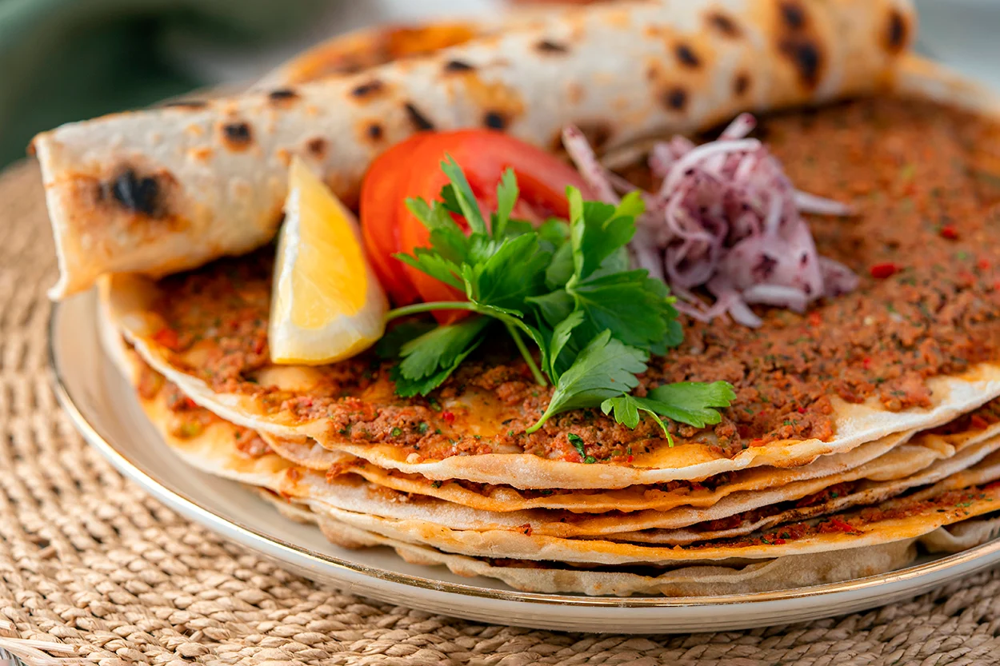

Selahaddin's Recipe for the Best Lahmacuns
Ingredients:
- 1 pound ground beef or lamb
- 1 large onion, finely chopped
- 2-3 cloves garlic, minced
- 1 red bell pepper, finely chopped
- 2 tomatoes, chopped
- 2 tablespoons tomato paste
- 1 teaspoon ground cumin
- 1 teaspoon paprika
- 1/2 teaspoon chili flakes (adjust to taste)
- Salt and pepper to taste
- 1/4 cup fresh parsley, chopped
- 2 tablespoons olive oil
- 4-6 thin pizza dough rounds

Instructions:
- In a large skillet, heat olive oil over medium heat.
- Add chopped onion and garlic. Sauté until they become translucent.
- Add ground beef or lamb and cook until browned. Break it apart with a spatula as it cooks.
- Add red bell pepper, chopped tomatoes, tomato paste, cumin, paprika, chili flakes, salt, and pepper. Cook for 10-15 minutes until the mixture thickens.
- Preheat your oven to 220°C.
- Roll out the pizza dough rounds into thin circles.
- Spread a generous amount of the meat mixture over each dough round, leaving a small border around the edges.
- Place the lahmacun on a baking sheet and bake in the preheated oven for 10-12 minutes or until the edges are golden and crisp.
- Remove from the oven and sprinkle chopped fresh parsley over the lahmacun.
- Serve hot and enjoy!